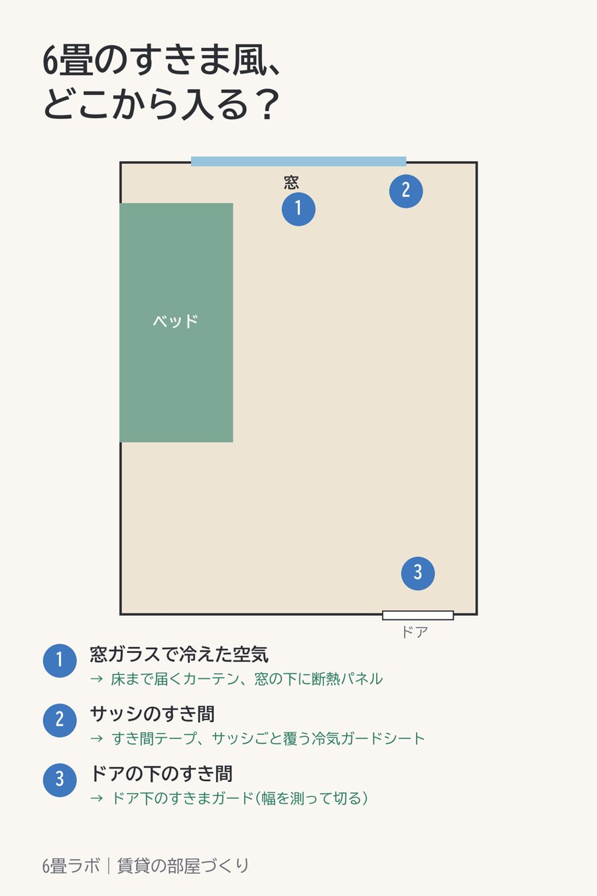

6畳のすきま風は、窓とサッシとドアの下から入る
この記事には楽天アフィリエイトのリンクが含まれています。

暖房をつけているのに足元だけ寒い。そういうときは、すきま風を疑ってみるといいです。
ワンルームで冷気が入ってくる場所は、だいたい3つです。窓ガラスで冷やされて床に落ちてくる空気、サッシのすき間から入る風、それから玄関や廊下につながるドアの下のすき間。
窓ガラスの冷えには、床まで届くカーテンと、窓の下に立てる断熱パネルが効きます。サッシのすき間は、すき間テープで埋めるか、サッシごと透明のシートで覆ってしまう方法があります。
ドアの下は、すきまガードを付けると冷気だけでなくほこりも入りにくくなります。幅に合わせて切れるものが多いので、先にドアの幅を測っておきます。
賃貸なら、貼る物ははがしたときに跡が残らないかを、目立たない所で一度試してから使うと安心です。
紹介した商品
- 【PR】ドアや窓に貼るD型のすき間テープ(楽天市場)
- 【PR】サッシごと覆う透明の冷気ガードシート(楽天市場)
- 【PR】ドア下のすきまガード(幅95cm・切って合わせられる)(楽天市場)
- 【PR】窓の下に立てるだけの断熱パネル(楽天市場)